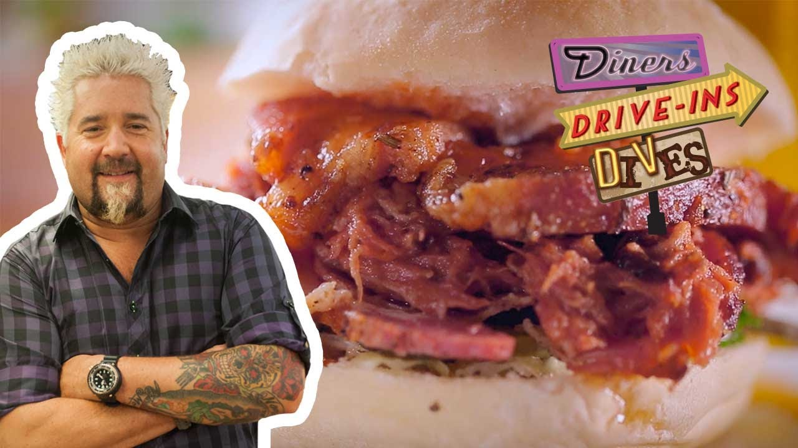

PULLED PORK SANDWICH!

What Is A Pulled Pork Sandwich?
A Pulled Pork Sandwich is slow smoked pork, that is then shredded and mixed with sauce, then served on a bun to form a sandwich.
What You'll Need To Make This Bad Boy:
- 1 ½ teaspoons whole coriander seed
- 1 ½ teaspoons whole cumin seed
- 1 ½ teaspoons black peppercorns
- ¼ teaspoons coarse kosher salt
- 1 ½ teaspoons dry mustard powder
- 1 ½ teaspoons chile powder
- 3 tablespoons dark brown sugar
- 3 ½ pounds boneless pork shoulder
- Hamburger or brioche buns, for serving
How To Make This Bad Boy:
- Assemble the spice rub for the pork: In a dry, small skillet over medium-low heat, toast coriander, cumin and peppercorns until fragrant, 1 to 2 minutes. Using a spice grinder or mortar and pestle, grind toasted spices into a fine powder. Transfer to a bowl and mix with salt, mustard powder, chile powder and sugar.
- If your roast is tied up, untie it. Massage meat generously with spice rub. If you have time, let meat rest for an hour or two at room temperature, or refrigerate for several hours or overnight.
- Heat oven to 300 degrees. Place pork in a baking pan and roast for 3 to 4 hours or until meat is pull-apart tender and internal temperature reads 200 degrees on a meat thermometer. Let meat cool for at least 30 minutes before pulling it apart and shredding with your hands or two forks. (This works best when the meat is warm but not hot.)
- Prepare the barbecue sauce: Combine ingredients in a medium pot. Simmer over medium-low heat for 15 to 20 minutes, stirring occasionally, until sauce has deepened in color. Season with more hot sauce if you like. Add two-thirds of the sauce to meat and toss to coat, adding more sauce as needed. (Any leftover sauce will keep for at least 2 weeks in the refrigerator.)
- Make the slaw: Combine cabbage, onion and jalapeño in a large bowl. In a small bowl, whisk together mayonnaise, vinegar, olive oil, salt and pepper. Add dressing to cabbage and toss well.
- Serve pulled pork with slaw, buns and hot sauce on the side, letting people assemble their own sandwiches.
Back To Recipes